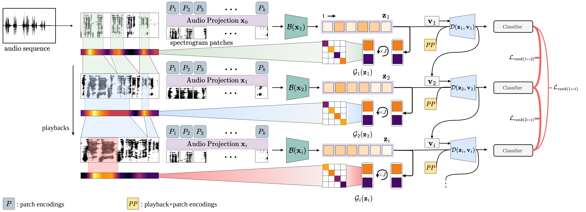

Play It Back: Iterative Attention for Audio Recognition

Abstract
A key function of auditory cognition is the association of characteristic sounds with their corresponding semantics over time. Humans attempting to discriminate between fine-grained audio categories, often replay the same discriminative sounds to increase their prediction confidence. We propose an end-to-end attention-based architecture that through selective repetition attends over the most discriminative sounds across the audio sequence. Our model initially uses the full audio sequence and iteratively refines the temporal segments replayed based on slot attention. At each playback, the selected segments are replayed using a smaller hop length which represents higher resolution features within these segments. We show that our method can consistently achieve state-of-the-art performance across three audio-classification benchmarks: AudioSet, VGG-Sound, and EPIC-KITCHENS-100.